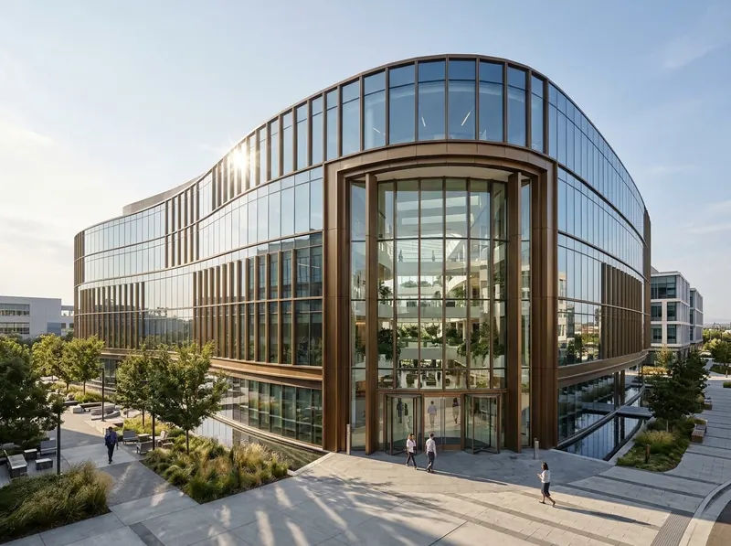
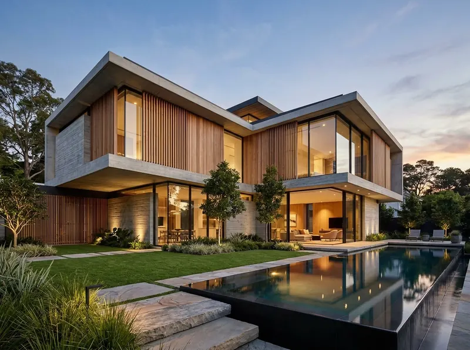
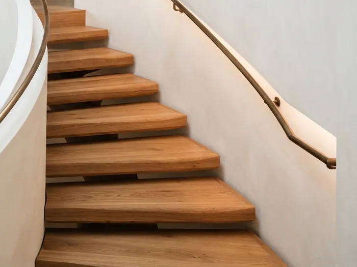
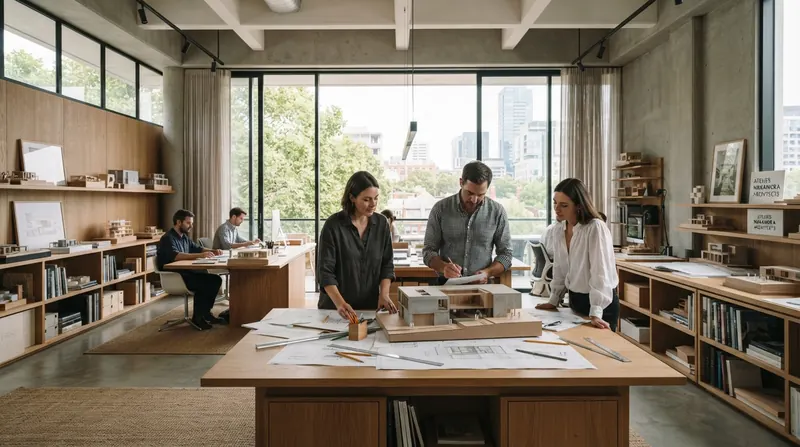
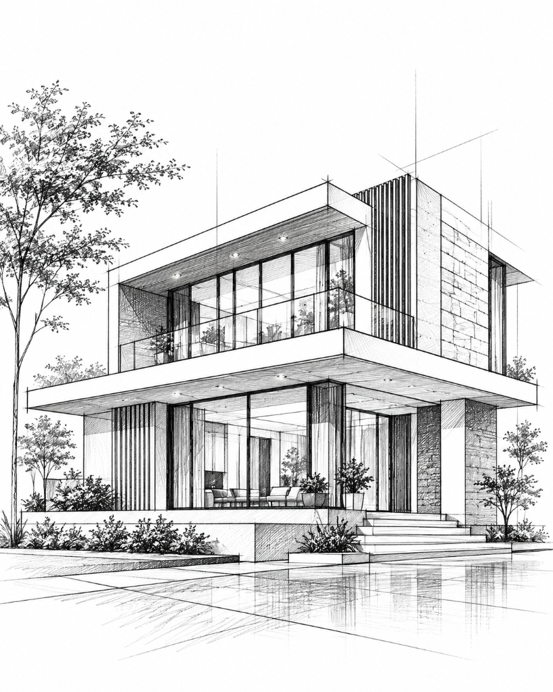
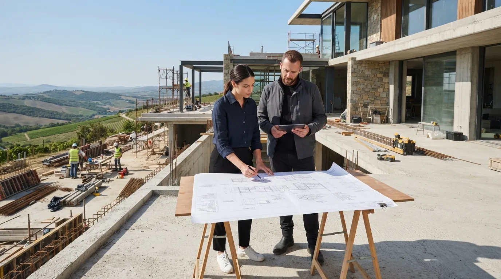

01Architectural Design
Creative, functional planning for homes and workplaces, shaped by site, sun and climate.
- Site analysis and massing studies
- Daylight and airflow planning
- Concept dossier and scale model
Services
Complete architectural services, from the first sketch to the finished build.

01Creative, functional planning for homes and workplaces, shaped by site, sun and climate.
 02
02
Beautifully planned homes, from private modern villas to expansive family estates.

03Offices, retail and hospitality spaces engineered with distinct presence and purpose.

04Calm, tactile interiors with bespoke joinery and materials curated to perfection.
 05
05
Clear architectural blueprints and technical drawings leaving nothing to interpretation.

06Hyper-realistic visuals and CGI elevations letting you experience the building early.

07Gardens, courtyards and water features harmoniously connecting building and setting.

08Hands-on architectural guidance and quality governance through to final handover.